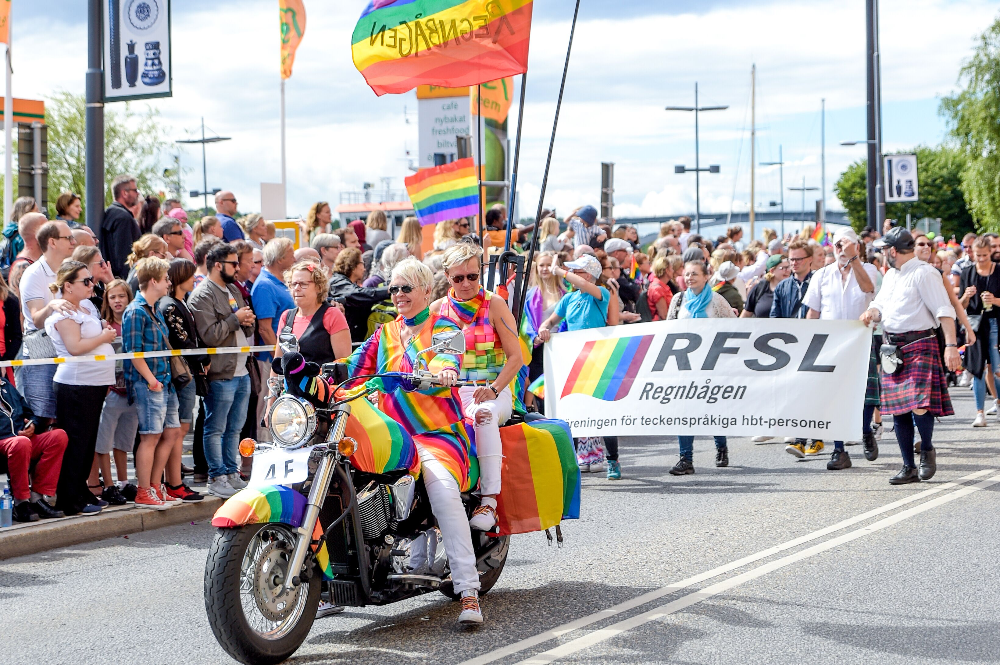

Pride Park
I Pride Park har vi fantastiska artister, utställare, restauranger och barer för musik och fest varje kväll mellan onsdag 31 juli och lördag 3 augusti. Nytt för i år är också ett gäng aktiviteter runt om i parken – hoppborg, elektrisk surfbräda, dildo-kubb och andra överraskningar. Mitt emot stora scenen ligger Champagnebaren med bokningsbar VIP-hylla och skaldjur på menyn, maila hello@fredagsrakan.se för bokning. I de andra restaurangtälten, Klubb Moxy och KingKong finns klassisk festivalmat med fokus på kvalitet och gröna alternativ, du kommer också kunna hitta smårätter och snacks. Vi har som tidigare år även en rad foodtrucks med smaker och influenser från hela världen.

Happy Pride Hour
Champagnebaren, Moxy och KingKong har Happy Pride Hour varje dag i parken fram till kl 17.00 med fina priser både på mat och dryck!
Stora Scenen
Stora scenen ligger mitt i Pride Park och här ser du invigningen, stora artister och avslutningscermonien. I år kan vi stolt presentera bland andra Village People, Pussy Riot, Weather Girls, Icona Pop, Melanie C och en hel schlagerkväll full av överaskningar!